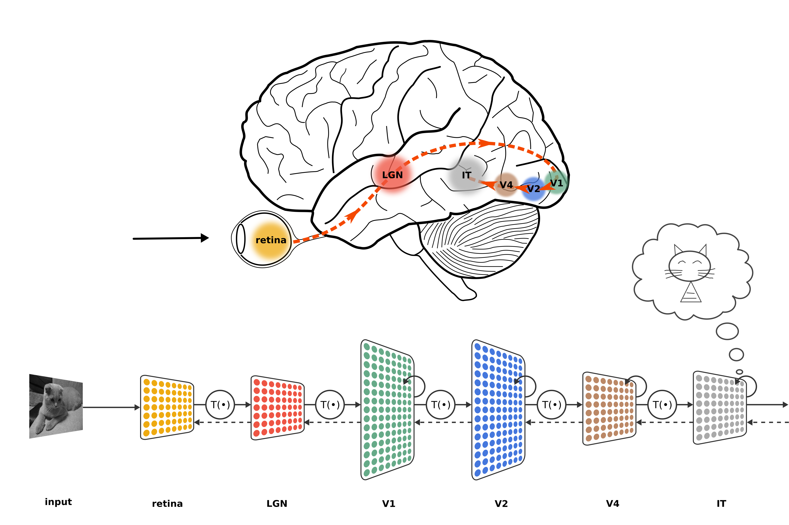
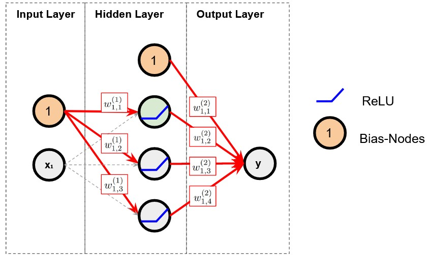
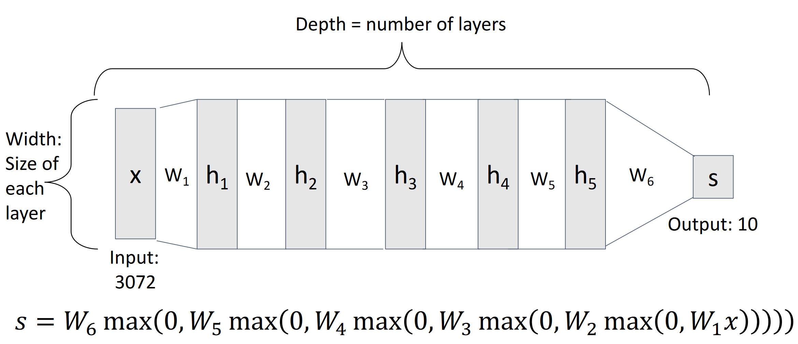

3 - Neural Networks
Biological Neural Networks
A biological neural network is a part of the nervous system and consists of interconnected neurons. A neuron is connected to other neurons via dendrites (these are “weighted” input signals) and via the axon (output signal) (see Figure 1). If the input signals exceed a certain threshold, the neuron “fires” and sends a signal through the axon, which then serves as an input signal for other neurons. Humans have about 86 billion neurons, each connected to about 1000 others on average (source).

Optical signals are processed, among other things, in the visual cortex (Figure 2). Signals are processed hierarchically, with the first layers recognizing simple patterns and later layers recognizing shapes and objects. See also the work of Hubel and Wiesel Hubel and Wiesel (1959).

The question that arises is:
Can we create artificial neural networks and reproduce the performance of biological neural networks?
Artificial Neural Networks
Artificial neural networks are models of biological networks. Such models were created and implemented technically as early as the 1940s.
Neural networks are often represented with a graph. The nodes are individual neurons in the network, and the edges are connections between the neurons (see Figure 3). The neurons are arranged in layers, with each neuron in a layer connected to every neuron in adjacent layers. The input layer represents the data, the output layer the (observable) outputs, and the hidden layers are within the network. The connections between the neurons are weighted.

From Linear Models to Neural Networks
In the following, we will describe neural networks mathematically. We start with a linear model. A linear model has the following form:
\[\begin{equation} f(\mathbf{x}^{(i)}) = \mathbf{W} \mathbf{x}^{(i)} + \mathbf{b} \end{equation}\]
The data point \(i\) is:
\[\begin{equation} \mathbf{x}^{(i)} \in \mathbb{R}^{p \times 1} \end{equation}\]
And model weights:
\[\begin{equation} \mathbf{W} \in \mathbb{R}^{k \times p} \end{equation}\]
As well as a bias term:
\[\begin{equation} \mathbf{b} \in \mathbb{R}^{k \times 1} \end{equation}\]
The following parameters must be learned from data using an optimization method: \(\mathbf{W}\) and \(\mathbf{b}\).
In neural networks, the linear model is extended with additional layers. The following equation defines a neural network with two layers.
\[\begin{equation} f(\mathbf{x}^{(i)}) = \mathbf{W}^{(2)} g\big(\mathbf{W}^{(1)} \mathbf{x}^{(i)} + \mathbf{b}^{(1)} \big) + \mathbf{b}^{(2)} \end{equation}\]
Where \(g()\) is a so-called activation function, such as the ReLU function:
\[\begin{equation} \text{ReLU}(x) = \begin{cases} x, & \text{if } x \geq 0 \\ 0, & \text{if } x < 0 \end{cases} \end{equation}\]
Only due to the activation function are non-linear relationships modelable. Without the activation function, the model collapses to a simple linear model.
Every layer between the input and output layer is called a hidden layer.
Typically, not just one data point is processed but a mini-batch of data, or even the entire dataset. The data points are arranged in a data matrix \(\mathbf{X} \in \mathbb{R}^{n \times p}\). The linear model is then defined as follows:
\[\begin{equation} f( \mathbf{X}) = \mathbf{X} \mathbf{W}^T + \mathbf{b}^T \end{equation}\]
The bias term \(\mathbf{b}\) is broadcasted (details here Link), so it can be added.
Activation Functions
The following code shows how activation functions are important for modeling non-linear relationships. The model has a hidden layer with several neurons but (left) no activation function and (right) with ReLU activation.
Figure 5 now shows a neural network including activation functions (ReLU). Sometimes the biases are also shown as nodes that feed into the next layer.

Universal Approximation Theorem
With a shallow neural network, any continuous function can be modeled with arbitrary accuracy (Universal Approximation Theorem). The following graphic illustrates that as the number of linear functions (and thus piecewise linear regions) increases, the approximation of the underlying function becomes more accurate.

Neural networks are therefore a particularly powerful class of models!
Deep Learning
When there are multiple hidden layers, it is called deep learning. Fig. Figure 7 illustrates such a model with 5 hidden layers.

Such a model is also called a multilayer perceptron (MLP). It consists of linear layers and activation functions.
Deep neural networks have more than one hidden layer. Although shallow neural networks can theoretically model arbitrarily complex functions, the number of neurons required is often impractical. It can be shown that adding hidden layers (increasing the depth of a network) is much more efficient (requires fewer neurons) for modeling complex functions.
In practice, it has been shown that the first layers in a network learn simple features. These are combined in deeper layers to learn and detect increasingly abstract concepts. This is well illustrated with images. When a neural network is applied to images, the first layers learn to detect simple features, such as edges and
colors. Further layers then detect shapes and objects, leading to specific items or people (see Fig. Figure 8).

Info
To directly observe the functioning of a neural network and try out the influence of various configurations, you can train networks directly in the browser using the following link: TensorFlow Playground.
Implementation in PyTorch
The following code shows how we can implement a configurable neural network.
import torch
import torch.nn as nn
import torch.nn.functional as F
class MLP(nn.Module):
def __init__(self, input_size, hidden_layer_sizes, num_outputs):
super().__init__()
# Initialize submodules of your module - typically layers
# that your module needs - these can then be used in the
# forward pass
self.flatten = nn.Flatten()
# a ModuleList allows you to flexibly chain submodules
# in a list - depending e.g. on configuration parameters
self.hidden_layers = nn.ModuleList()
last_size = input_size
for size in hidden_layer_sizes:
self.hidden_layers.append(nn.Linear(last_size, size))
last_size = size
self.output_layer = nn.Linear(last_size, num_outputs)
def forward(self, x):
"""The forward pass of your module."""
x = self.flatten(x)
for layer in self.hidden_layers:
x = F.relu(layer(x))
x = self.output_layer(x)
return x
# Example usage:
# Initialize the model with input size 784, one hidden layer of size 128, and 10 output units.
model = MLP(784, [128], 10)
# Example input vector (batch size of 32, input size of 784)
x = torch.randn(32, 784)
# Forward pass
output = model(x)We can easily display the architecture details with torchinfo
# Display the model architecture
from torchinfo import summary
summary(model, input_size=(32, 784))==========================================================================================
Layer (type:depth-idx) Output Shape Param #
==========================================================================================
MLP [32, 10] --
├─Flatten: 1-1 [32, 784] --
├─ModuleList: 1-2 -- --
│ └─Linear: 2-1 [32, 128] 100,480
├─Linear: 1-3 [32, 10] 1,290
==========================================================================================
Total params: 101,770
Trainable params: 101,770
Non-trainable params: 0
Total mult-adds (Units.MEGABYTES): 3.26
==========================================================================================
Input size (MB): 0.10
Forward/backward pass size (MB): 0.04
Params size (MB): 0.41
Estimated Total Size (MB): 0.54
==========================================================================================Question
How many parameters does this neural network have, and why?
Info
To refresh your knowledge on neural networks, it is worth watching the following videos: 3Blue1Brown - Neural Networks
References
Hubel, D. H., and T. N. Wiesel. 1959. “Receptive Fields of Single Neurones in the Cat’s Striate Cortex.” The Journal of Physiology 148 (3): 574–91. https://doi.org/10.1113/jphysiol.1959.sp006308.
Johnson, Justin. 2022. “EECS 498.008 / 598.008 Deep Learning for Computer Vision.” Lecture {Notes} / {Slides}. https://web.eecs.umich.edu/~justincj/teaching/eecs498/WI2022/.
Kubilius, Jonas. 2017. “Ventral Visual Stream.” https://figshare.com/articles/figure/Ventral_visual_stream/106794.
Lee, Honglak, Roger Grosse, Rajesh Ranganath, and Andrew Y. Ng. 2011. “Unsupervised Learning of Hierarchical Representations with Convolutional Deep Belief Networks.” Communications of the ACM 54 (10): 95–103. https://doi.org/10.1145/2001269.2001295.
Li, Fei-Fei. 2022. “CS231n Convolutional Neural Networks for Visual Recognition.” Lecture {Notes}. https://cs231n.github.io.
Phillips, Devin K. 2015. “Speed of the Human Brain.” Ask A Biologist, May. https://askabiologist.asu.edu/plosable/speed-human-brain.
Prince, Simon J. D. 2023. Understanding Deep Learning. MIT Press. https://udlbook.github.io/udlbook/.